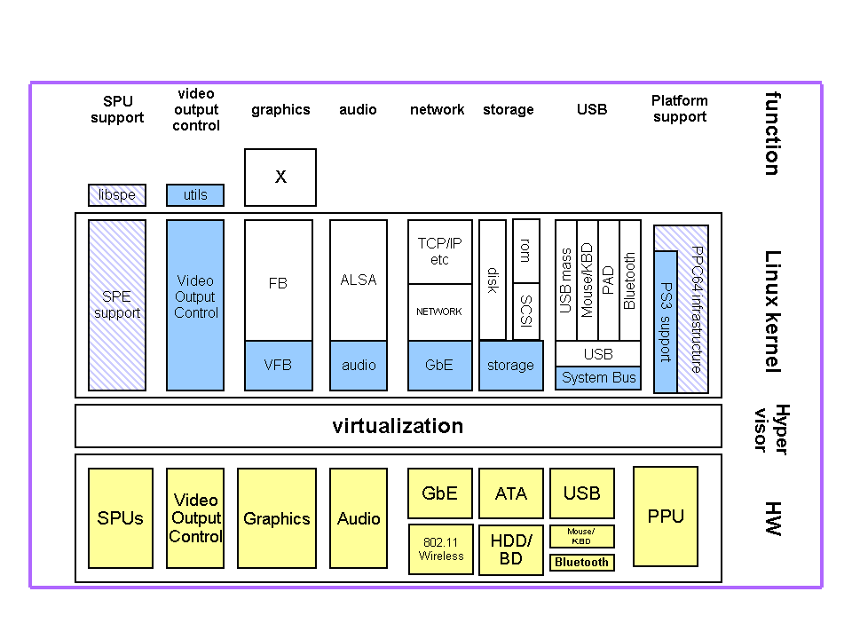

© 2008 Sony Computer Entertainment Inc.
© 2006,2007,2008 Sony Corporation
Permission is granted to copy, distribute and/or modify this document under the terms of the GNU Free Documentation License, Version 1.2 published by the Free Software Foundation; with no Invariant Sections, no Front-Cover Texts, and no Back-Cover Texts. A copy of the license is included in the section entitled "GNU Free Documentation License".
DISCLAIMER
THIS DOCUMENT IS PROVIDED "AS IS," AND COPYRIGHT HOLDERS MAKE NO REPRESENTATIONS OR WARRANTIES, EXPRESS OR IMPLIED, INCLUDING, BUT NOT LIMITED TO, WARRANTIES OF MERCHANTABILITY, FITNESS FOR A PARTICULAR PURPOSE, NON-INFRINGEMENT, OR TITLE; THAT THE CONTENTS OF THE DOCUMENT ARE SUITABLE FOR ANY PURPOSE; NOR THAT THE IMPLEMENTATION OF SUCH CONTENTS WILL NOT INFRINGE ANY THIRD PARTY PATENTS, COPYRIGHTS, TRADEMARKS OR OTHER RIGHTS. COPYRIGHT HOLDERS WILL NOT BE LIABLE FOR ANY DIRECT, INDIRECT, SPECIAL OR CONSEQUENTIAL DAMAGES ARISING OUT OF ANY USE OF THE DOCUMENT OR THE PERFORMANCE OR IMPLEMENTATION OF THE CONTENTS THEREOF.
TRADEMARK NOTICE
"PLAYSTATION" and "PS3" are registered trademarks of Sony Computer
Entertainment Inc. "Cell Broadband Engine" is a trademark of
Sony Computer Entertainment Inc. Linux® is the registered
trademark of Linus Torvalds in the U.S. and other countries.
Other company, product and service names
may be registered trademarks, trademarks or service marks of others.
This document gives an overview of the PS3 Linux kernel and device drivers.
The Linux kernel runs on the top of the PS3 hypervisor. Most devices and system resources are virtualized by the hypervisor. Linux device drivers have been created and/or modified to work with virtualized devices. Fig.1 illustrates structure of Linux Kernel and device drivers.

Fig. 1 Structure of the PS3 Linux kernel
The Linux kernel can access some devices directly (e.g. USB host controllers). Other devices are virtualized by hypervisor and device service is provided via hypervisor calls. For example, storage service hypervisor calls are available. See following sections for detail.
PS3 storage devices includes HDD, Blu-ray Disc drive (BD drive) and flash ROM. These devices are connected via Cell Broadband Engine.’s companion chip. Accessing these devices is performed by dedicated hypervisor calls. These hypervisor calls consist of simple straightforward methods: open, close, read, write and ioctl. Most of all methods are asynchronous, that is, methods will return immediately after call, and then the caller must wait for its completion via other method. These completions are notified by virtualized interrupts. The status of results of these asynchronous methods can be retrieved via the specific hypervisor call. Since the BD drive is basically ATAPI device, Linux can issue ATAPI commands by hypervisor ioctl. Some of ATAPI commands have been rejected by the hypervisor because of security issues.
PS3 Linux Disk storage driver is a block device driver(Module name: ps3disk). So the built-in HDD is accessed as /dev/ps3da. PS3 Linux BD/DVD/CD-ROM storage driver is implemented just like the usb storage driver does(Module name ps3rom). That is, the driver behaves as SCSI host controller driver and the storage devices themselves are as SCSI devices. So the built-in BD drive is accessed as SCSI CD-ROM, like /dev/sr0. The PS3 Linux FLASH ROM storage driver is a misc character divice driver(Module name: ps3flash). FLASH ROM is accessed as /dev/ps3flash.
The Storage probe code uses a thread that keeps on scanning for new devices, until no new device has shown up in the last 60 seconds.
PS3 Audio hardware can be divided into two parts; front end part and back end part.
The front end part is PS3 audio chip itself, the back end part consists HDMI driver chip, digital to analog converter for AV Multi interface, Optical Digital Out (IEC60958/SPDIF) device and base clock generators for 44.1KHz/48KHz audio clocks. Front end chip can be controlled by guest OSes through conventional register access. To gain the access of these registers the guest OS must issue dedicated hypervisor call and then ioremap. The front end chip has simple structure, which reads(DMAs) PCM data into its buffer and put them out with specified clock and format. No special hardware to support to decode compressed audio, like MP3, is equipped. Unlike AC97, the front end chip does not have volume control. Guest OSes should modify supplying digital PCM audio data into the chip if it wants to control volume.
The back end audio devices are completely controlled by called ‘AV setting driver’. Setting up sample frequency and data format consistently between back end and front end is the role of the AV setting driver. Since the AV setting driver resides behind hypervisor, guest OS should use virtual UART to communicate with it.
The Linux driver for this audio is composed under ALSA driver framework, not OSS.
PS3 has a powerful graphic processing unit with high speed host connection. The GPU is connected to both HDMI and AV multi interface. Although the GPU is connected directly to CBE, no direct access by guest OSes to the GPU is allowed currently. Video mode/format setting is also the role of AV setting driver. PS3 Linux fb driver calls AV setting driver to setup video modes.
Currently X server uses virtual frame buffer to render its image. No hardware acceleration is supported under Linux. See the description above section.
PS3 has built-in giga bit ethernet controller. Unlike conventional PC’s ethernet controllers, it is not a PCI device. It is connected to companion chip directly. To access or setup the chip, guest OSes should use dedicated hypervisor calls. This controller has its dedicated DMA controller, thus transferring data is automatically sent/received without PPE interventions. There is also dedicated hypervisor call to set up DMAC.
VLAN framework is internally used for the built-in controller. Therefore, conventional VLAN can’t be used. PROMISC network mode is not supported with this controller.
Some models of PS3 have built-in 802.11b/g wireless hardware. It supports hadware encryption/decryption of WEP, TKIP and CCMP(AES) so that PS3 can connect to WPA and WPA2 APs. This wireless does not support ad-hoc mode nor monitor mode.
This wireless chip behaves just like a phy chip connected to ethernet controller. Thus, interrupts and tx/rx hardware queues are shared among gigabit ethernet and wireless and GuestOS can not handle any raw 802.11 frames. As the wireless part has no separate MAC address, the ethernet and wireless uses same MAC address. Guest OS should insert VLAN tag to select destination 'phy', i.e. ethernet or wireless for outgoing packets. For incoming packets, the hypervisor and the hardware inserts dedicated VLAN tag in received packets.
Linux support for wireless is integrated into ethernet driver 'ps3_gelic'. The control interface is designed to use standard Linux's Wireless Extension. Thus standard Linux wireless managing tools, wireless_tools, wpa_supplicant etc should work on this driver. As PS3 Linux kernel runs in 64bit mode, systemcalls from 32bit userland program is passed via compatible layer of Linux kernel. Since there are some issues for wireless extension in this compat layer, 32bit wireless managing tools may not work well.
PS3 low model has no wireless.
The PS3 is equipped with industry standard USB EHCI host controllers and companion OHCI host controllers, and optionally an internal high speed USB hub. In this case, the USB ports on the front panel connect to the internal hub, and not to the USB host controllers directly. The host controllers are represented as devices on the hypervisor SB bus. The PS3 Linux support implements the minimal EHCI and OHCI driver 'bus glues' as needed by the standard Linux USB driver stack.
PS3 game pad has both USB mode and Bluetooth mode. Enabling each mode depends on the timing of pressing PS button, which resides in the center of the pad.
In USB mode, although it almost conforms to USB HID specification, it requires special USB request to enable sending HID data (reports). The generic USB HID driver is modified to support this. Because it is just HID device, information of the device is retrieved by standard HID device node, like /dev/input/js0, /dev/input/event0 and so on. Bluetooth mode is not supported by Linux.
Built-in memory card reader/writer supports Memory Stick, CompactFlash and SD. The controller is a high speed USB device and conforms to the USB Mass Storage specification. The generic USB Mass Storage driver of Linux can support this device without modification. The device is connected to a root port of the EHCI controller. Because each card slot behaves logical unit (LUN), the Linux driver can support all slots simultaneously.
PS3 has built in USB Bluetooth host controller which conforms to Bluetooth host controller interface specification, so generic hci_usb Linux driver can handle the host controller. The controller is high speed USB device and connected to directly to an internal EHCI root port.
Paring between Bluetooth device and host is maintained on a per OS basis. That is, Linux paring information does not propagate to the Game OS, and vice versa.
Similar to a PC, a built-in real time clock (RTC) keeps the wall clock time for the PS3. The RTC is backed up by a battery and so ticks even if external power is removed. The RTC value can be read by a hypervisor call, but it can not be written. The RTC value monotonically increases and never rolls back.
The PS3 Linux platform support uses the standard RTC userland interface /dev/rtc, The standard hwclock command can be used to manage the RTC. Since the RTC is read only, the PS3 Linux platform support maintaines a value in system flash memory that represents the difference between the hardware RTC value and the Linux RTC value.
The Linux kernel can be compiled as follows:
Linux kernel 2.6.25.4
$ tar jxf linux-2.6.25.4-YYYYMMDD.tar.bz2
$ cd linux-2.6.25.4-YYYYMMDD
$ make ps3_defconfig
$ make
This generates a kernel image file named vmlinux.Work is ongoing to improve Linux kernel support for the PS3 by dedicated staff. One goal is to make the mainline kernel have full support for PS3.
Since the release of the linux-2.6.16 PS3 support to Linux distributors for use in PS3 release day distributions, there has been continuous work to cleanup the source code, with significant parts completely re-worked to properly interface with appropriate kernel infrastructures. Our Linux kernel development effort is shifting to device drivers and the perfomance monitor.
Following the public release of the PS3 game console, Linux kernel maintenance for the PS3 will continue publicly. Source code is available for public download at www.kernel.org.
| 1.7 | May 27 2008 | Update Linux kernel 2.6.25.4 DTC is no longer needed to build the kernel" |
| 1.6 | Feb 1 2008 | Update Linux kernel 2.6.24 Update "Wireless Extension for GbE" |
| 1.5 | Oct 26 2007 | Update Linux kernel 2.6.23 |
| 1.4 | Aug 17 2007 | Update Linux kernel 2.6.23-rc3 |
| 1.3 | Apr 25 2007 | Add "Wireless Extension for GbE" |
| 1.1 | Dec 8 2006 | Added "Revision History" and "About This Document" |
| 1.0 | Nov 11 2006 | Initial Revision |